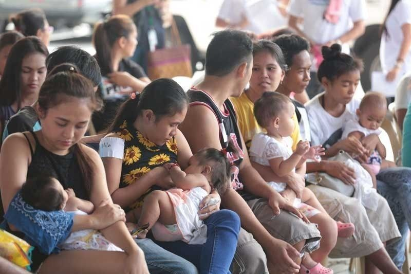

Why is Comprehensive Sexuality Education (CSE) important?
Comprehensive Sexuality Education (CSE) is an essential approach to education that provides learners with accurate, age-appropriate, and evidence-based information about human development, relationships, health, and personal well-being. CSE helps individuals develop critical thinking, decision-making, and communication skills, enabling them to make informed and responsible choices. Furthermore, it promotes respect, gender equality, and healthy relationships while reducing misconceptions and risky behaviors. By equipping young people with the knowledge and skills necessary to navigate social and health-related challenges, Comprehensive Sexuality Education contributes to their overall development and supports the creation of safer and more informed communities.
Furthermore, CSE plays a significant role in preventing unwanted pregnancies and reducing the spread of sexually transmitted infections (STIs) by promoting responsible behavior and increasing awareness of preventive measures. It also encourages respect for personal boundaries, fosters positive attitudes toward gender equality, and helps individuals recognize and avoid abusive or unhealthy relationships. By addressing common misconceptions and providing scientifically accurate information, sex education empowers learners to make safe choices and develop healthy lifestyles.
According to World Health Organization (WHO), comprehensive sexuality education (CSE) aims to improve knowledge and understanding, and to correct misconceptions by providing young people with age-appropriate, scientifically accurate, and culturally relevant information about their bodies, health, relationships and rights. It also aims to promote self-awareness and norms that are equitable and respectful of others, by providing structured opportunities to discuss and reflect on thoughts and feelings, attitudes and values, and to practice skills which helps young people stay healthy, build respectful relationships, make informed choices, and seek help when needed. Comprehensive Sexuality Education - WHO — learn more
Who Needs Comprehensive Sexuality Education?
CSE delivers tailored developmental benefits at every stage of life:
Young Children (Age 5-9)
Young children need Comprehensive Sexuality Education to help them understand their bodies, practice personal hygiene, recognize personal boundaries, and identify safe and unsafe situations so they can protect themselves and seek help when needed.
Early Adolescents (Ages 10–14)
Early adolescents need Comprehensive Sexuality Education because they are beginning to experience puberty and emotional changes, and they need accurate information to understand these developments and build self-confidence.
Older Adolescents (Ages 15–19)
Older adolescents need Comprehensive Sexuality Education to develop responsible decision-making skills, build healthy relationships, understand consent, and protect themselves from misinformation and health risks.
Young Adults (Ages 20–24)
Young adults need Comprehensive Sexuality Education to support informed choices about relationships, reproductive health, family planning, and the responsibilities that come with adulthood.
Adults (Ages 25+)
Adults need Comprehensive Sexuality Education to maintain healthy relationships, make informed reproductive health decisions, and stay updated on health and family-related issues throughout life.
Parents and Guardians
Parents and guardians need Comprehensive Sexuality Education so they can provide accurate information, communicate effectively with their children, and support their healthy growth and development.
Comprehensive Sexuality Education (CSE) is important for people of all ages. Young children need it to understand their bodies, personal safety, and boundaries. Early adolescents benefit from learning about puberty and emotional changes, while older adolescents need guidance on responsible decision-making, healthy relationships, and consent. Young adults and adults use CSE to make informed choices about relationships, reproductive health, and family planning. Parents and guardians also need CSE so they can support and educate their children with accurate information and open communication.

Teen Pregnancies Rates
Teenage girls are often the most affected by early pregnancy across the country because the lack of comprehensive sexuality education leaves them without enough knowledge to make informed decisions about their reproductive health, understand the consequences of unprotected sexual activity, and access accurate information about contraception and healthy relationships. As a result, they become more vulnerable to unintended pregnancies, which can affect their education, health, and future opportunities.
| Country | Age Range | Births per 1,000 |
|---|---|---|
| Central African Republic | 15-19 | 163.1 |
| Mozambique | 15-19 | 153.4 |
| Equatorial Guinea | 15-19 | 150.4 |
| Niger | 15-19 | 145.3 |
| Angola | 15-19 | 140.8 |
| Mali | 15-19 | 138.6 |
According to World Population Review these are the 6 Countries with the Most Teen Births. Teenage Pregnancy Rates by Country 2026 — learn more